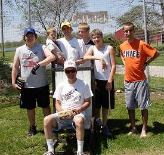
Opening Day Rosters-Front: Tony Cork. Back (L-R): Evan Woodard, Caleb and Patrick Cork, David Ulrich, Luke Yochum and Kyle Shimer. |
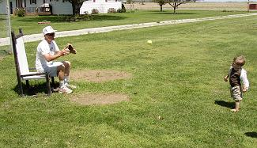
For the third consecutive year, Caleb Cork threw out the ceremonial first pitch on Opening Day. |
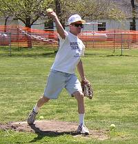
Tony Cork was outstanding in the opener allowing just one run and 4 hits in the complete game victory. |
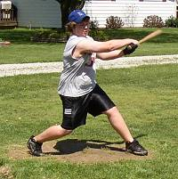
Evan Woodard blasted a homerun in the second game and finished the day 6-for-24 with 4 runs scored. |
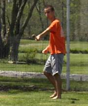
Kyle Shimer went 6-for-24 in the doubleheader with an RBI and run scored. |
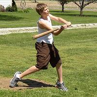
Luke Yochum knocked in a run in the second game of the doubleheader and finished the day with 3 hits. |
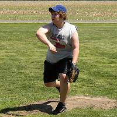
Evan Woodard made the first start of his career and suffered the loss despite allowing just 2 earned runs in the first game. |
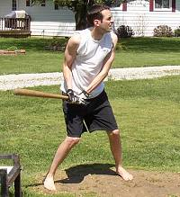
Patrick Cork finished the doubleheader 8-for-23 with 3 homeruns and 7 RBI. |
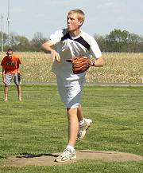
David Ulrich suffered the loss in game number two allowing 5 earned runs and striking out 5. |
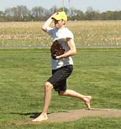
Patrick Cork picked up the win in game number two by allowing just one run on five hits while striking out 14. |
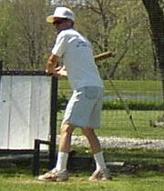
Tony Cork went 9-for-23 in the doubleheader with a homerun and 2 RBI. |
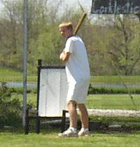
David Ulrich went 5-for-25 and had a RBI single and run scored in game number one. |